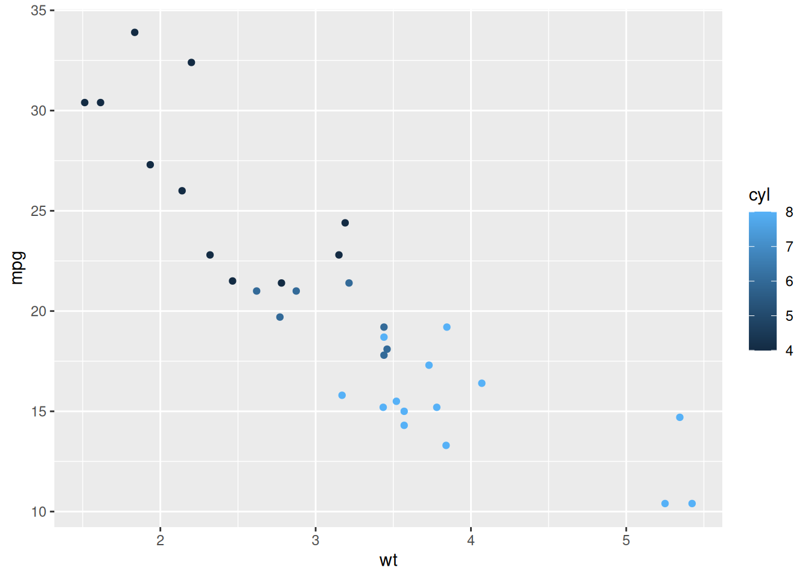

Chapitre 8 Du Rmarkdown interactif
Quand notre produit de sortie est un pdf, on va vouloir générer des graphiques et cartes qui ont le comportement d’une image simple. C’est ce que nous avons fait depuis le début de ce cours. Mais de plus en plus de nos projets sont destinés à une publication web et un certain niveau d’interactivité est souhaité. La considération principale à prendre en compte est l’environnement de déploiement. Si mon document est hébergé sur un serveur R, j’ai la possibilité de lui faire exécuter du code R “en direct” en fonction des actions de l’utilisateur. Dans le cas contraire, il faudra utiliser de l’interactivité en javascript. Ce langage est interprété et exécuté directement par le navigateur du client (celui qui consulte la page). Mais pas d’inquiétude, vous pouvez continuer à coder uniquement en R, le javascript est caché derrière.
8.1 Interactivité simple, les visuels s’animent
Lorsqu’on choisit le HTML comme format de sortie, on peu utiliser toutes les possibilités d’animation des cartes et graphes vus dans le module 5 - “Valoriser ses données avec R”.
Vous pouvez intégrer des cartes leaflet, des cartes et graphiques ggiraph, des datatables et bien d’autres widgets qui offrent des possibilités d’animations au survol, d’infobulles, de zoom etc. Ces widgets ne nécessitent pas de déploiement sur un serveur R pour fonctionner. Ils sont exécutés par le navigateur client.
On parle ici d’interactivité simple car il s’agit uniquement d’effets visuels dans le comportement des widgets mais il n’y a aucune modification des données dépendante de l’utilisateur ni aucune opération côté serveur.
8.2 Interactivité avancée, les inputs utilisateur
Dans certains cas, on souhaite que l’utilisateur puisse directement influencer les visuels, en filtrant une sous-partie du jeu de données par exemple. Il existe une solution qui permet cela tout en restant dans le cadre d’une exécution par le navigateur client : le package Crosstalk.
Le fonctionnement de base est très simple, on transforme notre objet (la dataframe qui contient les données affichées) en un objet partagé (shared object en anglais) :
Regardez comme cela est noté dans l’environnement de travail.
On peut spécifier un argument qui indique le nom d’une colonne de valeurs toutes différentes permettant d’identifier les lignes de manière unique. On peut voir ça comme une clé primaire en gestion de base de données. Par défaut Crosstalk utilise le numéro de ligne.
À partir de là, on peut utiliser cet objet partagé à la fois dans un widget de filtre, dans un tableau et dans une carte dynamique pour que l’utilisateur puisse filtrer ses objets à afficher.
library(crosstalk)
library(leaflet)
library(DT)
dataframe_partagee <- SharedData$new(dataframe, ~modalites)
filter_select(id = "mon_filtre", label = "Choisissez une modalité", sharedData = dataframe_partagee, group = ~modalites)
datatable(dataframe_partagee, ...)
leaflet(dataframe_partagee) %>%
addCircleMarkers(...)Attention, pour le moment, leaflet ne permet l’utilisation d’une dataframe partagée que pour une représentation ponctuelle. Il n’est pas possible de filtrer des objets polygonaux de cette manière.
8.3 Exemple reproductible

shared_mtcars <- SharedData$new(mtcars)
plot <- ggplot(shared_mtcars, aes(x = wt, y = mpg, color = cyl))+
geom_point()
plot2 <- ggplot(shared_mtcars, aes(x = hp, y = qsec, color = cyl)) + geom_point()
bscols(widths = c(3, 5, 4),
list(
filter_checkbox("cyl", "Nb de cylindres", shared_mtcars, ~cyl, inline = TRUE),
filter_slider("hp", "Puissance (cv)", shared_mtcars, ~hp, width = "100%"),
filter_select("auto", "Automatique", shared_mtcars, ~ifelse(am == 0, "Oui", "Non"))
),
ggplotly(plot, width=250, height=250),
ggplotly(plot2, width=250, height=250)
)8.4 Exercice 7 (facultatif)
- Repartir du .Rmd de l’exercice 4 au format HTML
- Ajouter un nouveau chapitre relatif à des visualisations interactives (si besoin : voir la partie interactivité des visualisations du module 5 du parcours)
- Créer un widget HTML interactif : un graphique ggiraph, un tableau datatable, une carte leaflet…
- Créer une dataframe partagée à l’aide du package crosstalk
- Utiliser cette dataframe partagée pour créer un filtre crosstalk sur la colonne country
- Créer un widget interactif à partir de cette dataframe partagée
Résultat attendu :
8.5 Interactivité complète, l’application Shiny embarquée
À condition de disposer d’un serveur R pour déployer son document, il est possible d’intégrer des objets interactifs Shiny (inputs et outputs) voire une application Shiny complète dans un Rmarkdown.
Dans votre yaml, il faut inclure la ligne runtime: shiny, pour reprendre l’exemple du chapitre 6, cela donne :
---
title: "mon_premier_document"
author: "Moi"
date: "31/10/2022"
runtime: shiny
output: html_document
params:
annee: 2022
region: Bretagne
date: !r lubridate::today()
---Vous pouvez voir que Rstudio vous propose désormais “Run document” au lieu de “Knit”. Il comprend qu’il doit désormais utiliser un moteur shiny pour permettre la visualisation du document. Attention, ce moteur “shiny” n’est pas embarqué dans le HTML produit, cela signifie qu’une installation de R doit être accessible du lecteur du document produit.
À partir de là, vous pouvez inclure directement des inputs et outputs Shiny dans votre document mais il y a un twist : contrairement à une application Shiny avec une logique UI / serveur où vous devez prévoir des placeholders dans l’UI pour vos sorties de serveur, dans la version Rmarkdown vous pouvez directement appeler les fonctions de la famille renderXXX().
Application Shiny classique :
library(shiny)
ui <- bootstrapPage(
selectInput("input_utilisateur", ...),
plotOutput("mon_graph", ...)
)
server <- function(input, output) {
output$mon_graph <- renderPlot({
ggplot(...)
})
}
shinyApp(ui = ui, server = server)La même chose en Rmarkdown :
---
runtime: shiny
output: html_document
---
```{r eval = FALSE}
selectInput("input_utilisateur")
```
```{r eval = FALSE}
renderPlot({
ggplot()
})
```La syntaxe s’en trouve simplifiée, c’est la structure du document Rmarkdown qui permet de gérer le placement des différents éléments dans l’interface.
Une autre option consiste à directement intégrer le code l’application Shiny tel quel dans le document Rmarkdown :
---
runtime: shiny
output: html_document
---
```{r eval = FALSE}
library(shiny)
ui <- bootstrapPage(
selectInput("input_utilisateur", ...),
plotOutput("mon_graph", ...)
)
server <- function(input, output) {
output$mon_graph <- renderPlot({
ggplot(...)
})
}
shinyApp(ui = ui, server = server, options = list(height = 500))
```L’argument “height” en option permet d’indiquer la place (ici par défaut en pixel) que doit occuper l’application dans le document.
La réciproque est vraie, il est possible d’inclure des documents markdown dans une application Shiny (souvent utilisé pour la page d’accueil) en utilisant la fonction includeMarkdown("mon_markdown.md") à l’intérieur de l’UI.
Il est donc possible d’inclure dans une app Shiny un markdown qui lui même contient une application Shiny…🤯